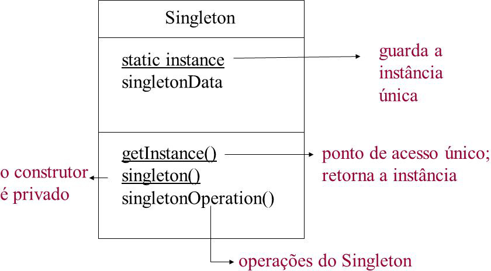

Singleton e Iterator
Por Victor Feitoza
Curso: Análise e Desenvolvimento de Sistemas
Disciplina: Arquitetura para Computação Móvel
Tópicos
- Visão geral
- Objetivos
- Estrutura
- Pequenos exemplos
- Consequencias
Singleton - Visão geral
O padrão Singleton garante que uma classe tenha apenas uma instância, fornecendo um ponto global de acesso a ela.
Singleton - Objetivos
- Tornar a própria classe responsável por manter o controle sobre a sua única instância.
- A classe deve garantir que nenhuma outra instância será criada.
- A classe deve interceptar pedidos de criação de novos objetos a serem instanciados.
- A classe deve fornecer um meio para que objetos de outras classes acessem a sua única instância.
- Deve fornecer um ponto de acesso único à sua única instância.
Singleton - Estrutura

Singleton - Consequências
- Permite controlar o número de instâncias que a aplicação utiliza.
- Mais flexível do que operações de classe.
Iterator - Visão geral
Iteração com todos os elementos independente da estrutura utilizada, fornecendo acesso genérico aos elementos.
Iterator - Objetivos
- Padronizar a iteração sobre os elementos de agregados.
- Permitir modificações na estrutura interna do agregado sem afetar quem faz uso dele apenas para iteração.
- Prover interface única de iteração sobre agregados.
- Permitir a troca do tipo do agregado sem afetar quem faz uso dele apenas para iteração.
Iterator - Consequencias
- Generalidade na iteração sobre os elementos de um agregado.
- Troca da implementação do agregado sem afetar quem faz iteração sobre seus elementos.
- Possibilidade de realizar múltiplas iterações concorrentes sobre um agregado.